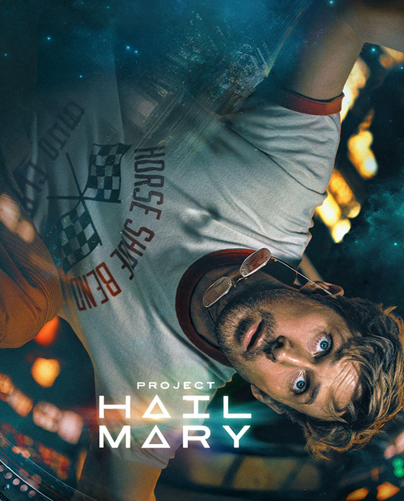
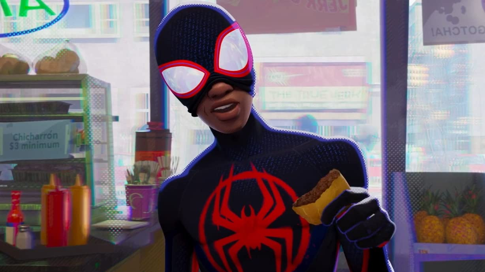
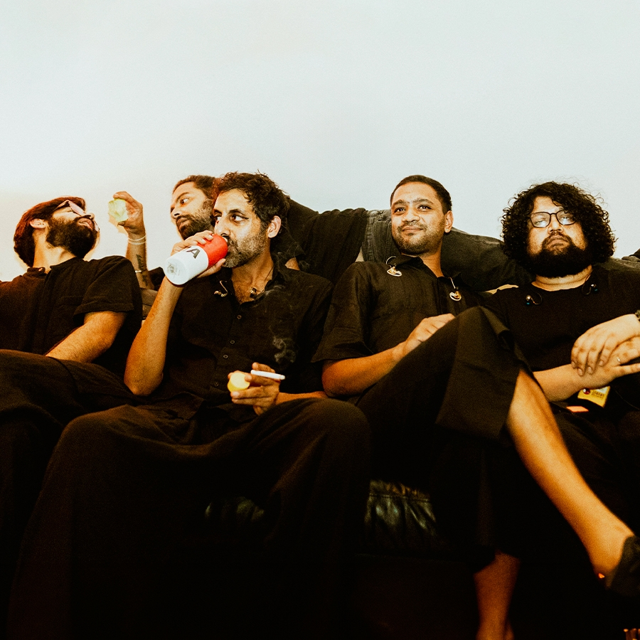

Movies[View Complete Bank →]

Project Hail Mary
An incredible masterclass in hard sci-fi problem solving. Compelling narrative pacing that makes isolated survival feel intensely gripping.
Inglourious Basterds
Tarantino at his absolute sharpest. Masterful structural tension, flawless dialogue velocity, and pitch-black historical revisionism.
F1 Movie
Pure adrenaline captured on screen. Intense cinematography and precise audio engineering that perfectly translate high-stakes track dynamics.

Across the Spider-Verse
A breathtaking visual achievement. The complex, multi-layered animation style completely redefines the boundaries of modern comic storytelling.
Artists
Kendrick Lamar
Unmatched cinematic lyricism and complex structural storytelling that redefines contemporary hip-hop.

Bruno Mars
Pure performance excellence. Flawless vocal execution fused with an incredible sense of retro-funk showmanship.

Peter Cat Recording Co.
A beautiful blend of gypsy jazz, psychedelic lounge music, and distinct velvet-toned songwriting.
Prateek Kuhad
Intimate, stripped-back indie pop melodies driven by incredibly raw and resonant storytelling.
Books
Book Title One
Core structural lessons, underlying perspectives, or mental frameworks gained from this layout.
Book Title Two
Core structural lessons, underlying perspectives, or mental frameworks gained from this layout.
Dishes / Food
Dish Title One
Specific regional flavor components, preparation profiles, or cultural anchors associated with this selection.